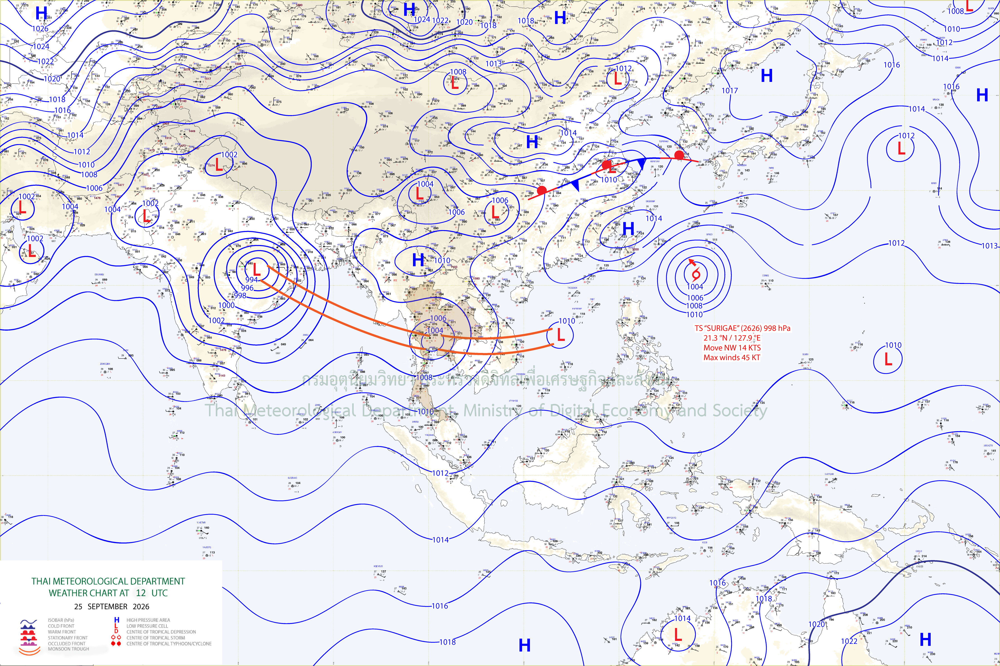

สรุปสถานการณ์ฝนตกหนัก กรุงเทพมหานคร
ช่วงเวลา: 24 – 29 กันยายน 2569ภาพรวมปัจจัยทางอุตุนิยมวิทยา ฝนจากสถานีวัด และฝนเรดาร์สะสมทั้งเหตุการณ์ (24 ก.ย. 07:00 – 29 ก.ย. 07:00 น.)
ข้อมูลสถานีวัดน้ำฝนในหน้านี้ยังเป็นข้อมูลตัวอย่าง (SAMPLE) รอการแทนที่ด้วยข้อมูลจริง
ฝนสะสมสูงสุดจากสถานี
– มม.
ฝนรายชั่วโมงสูงสุดจากสถานี
– มม./ชม.
เขตที่ฝนเรดาร์สะสมเฉลี่ยสูงสุด
– มม.
1. ปัจจัยที่ทำให้ฝนตกหนัก : หย่อมความกดอากาศต่ำ
แผนที่อากาศขณะหย่อมความกดอากาศต่ำมีกำลังแรงที่สุด

25 ก.ย. 2569 · 19:00 น.คำอธิบายสภาพอากาศ
24 ก.ย.
หย่อมความกดอากาศต่ำเคลื่อนตัวจากประเทศกัมพูชาเข้าสู่ภาคตะวันออกของไทย เหนี่ยวนำให้เกิดกระแสลมหมุนทวนเข็มนาฬิกาดึงความชื้นเข้าสู่ศูนย์กลาง ขณะที่กรุงเทพมหานครเริ่มมีฝนตกในช่วงกลางดึก
25 ก.ย. (ภาพนี้ 19:00 น.)
ศูนย์กลางหย่อมความกดอากาศต่ำเคลื่อนเข้าปกคลุมบริเวณจังหวัดสระแก้วและนครนายก ส่งผลให้กรุงเทพมหานครมีฝนตกหนักอย่างต่อเนื่องจนถึงช่วงดึก
สรุป: ลมหมุนทวนเข็มนาฬิการอบหย่อมความกดอากาศต่ำพาความชื้นเข้าสู่ศูนย์กลาง เมื่อศูนย์กลางอยู่ใกล้กรุงเทพมหานครมากที่สุด จึงเป็นช่วงที่ฝนตกหนักต่อเนื่อง
2. ปริมาณฝนจากสถานีวัดน้ำฝน
สถานีที่ฝนสะสมสูงสุด 5 อันดับแรก
กำลังโหลดข้อมูล…
5 สถานีฝนสะสมสูงสุด
สถานีอื่น ๆ
| อันดับ | ชื่อสถานี | แขวง | เขต | ฝนสะสม (มม.) | ฝนสูงสุดรายชั่วโมง (มม./ชม.) | เวลาที่ฝนสูงสุด |
|---|---|---|---|---|---|---|
| กำลังโหลดข้อมูล… | ||||||
คลิกที่แถวเพื่อดูตำแหน่งสถานีบนแผนที่ · ฝนสูงสุดรายชั่วโมงคำนวณจากข้อมูลรายชั่วโมงของสถานี
3. ปริมาณฝนเรดาร์สะสมทั้งเหตุการณ์
แผนที่ฝนเรดาร์สะสมรายกริด และสถานการณ์ฝนเรดาร์สะสมเฉลี่ยรายเขต
3.1 ฝนเรดาร์สะสมทั้งเหตุการณ์ (มม.)
กำลังโหลดข้อมูลเรดาร์…
ฝนสะสม (มม.)
3.2 ฝนเรดาร์สะสมเฉลี่ยรายเขต ทั้งเหตุการณ์ (มม.)
กำลังโหลดข้อมูลรายเขต…
ฝนสะสมเฉลี่ย (มม.)
5 เขตที่ฝนเรดาร์สะสมเฉลี่ยสูงสุด
รายละเอียดเพิ่มเติม: ปริมาณฝนเรดาร์เชิงพื้นที่ (รายเขต/รายแขวง) · ฝนสะสมรายวัน